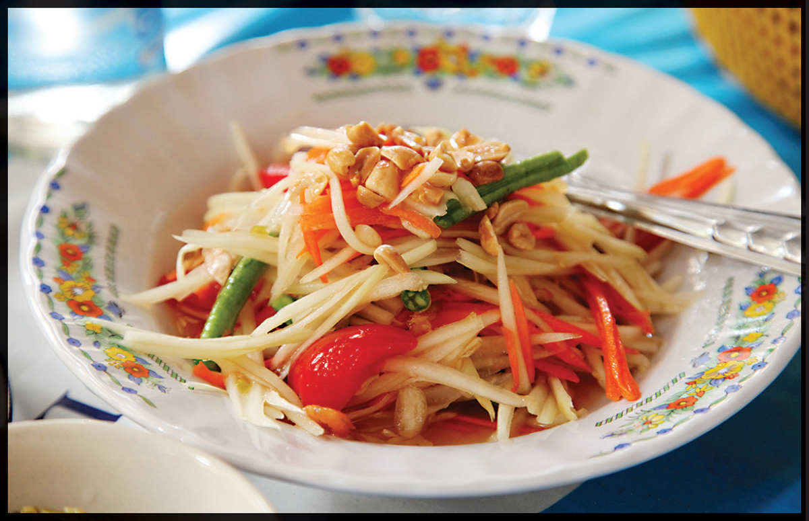

SOM TAM
|
Yield Serves 4 |
Active Time 15 minutes Total Time 15 minutes |
Green papaya can be found at well-stocked Asian supermarkets and is best shredded with a special shredding tool that looks like a Y-peeler with a wavy blade. This tool is available at Southeast Asian markets or online. Alternatively, use the shredding attachment on a mandoline or julienne by hand: Start by peeling it, split it and discard the seeds, cut into lengths, then julienne the same way you would a cucumber (see here).
Or if that’s all too much trouble, you can use 6 ounces (170 g) shredded cabbage with 1 to 2 ounces (30 to 60 g) each of peeled carrot and daikon radish grated on the large holes of a box grater in place of the papaya. It’ll still be great, I promise.
INGREDIENTS
3 medium garlic cloves (8 g), roughly chopped
1 to 6 fresh Thai bird chiles, roughly chopped
1 tablespoon (12 g) palm sugar, plus more to taste
2 tablespoons (30 ml) fish sauce, plus more to taste
2 tablespoons (30 ml) fresh lime juice, plus more to taste
Small handful of dried shrimp
½ cup (2 ounces/about 60 g) Fried Peanuts (here) or roasted peanuts
3 ounces (85 g) yard-long or green beans, cut into 1-inch segments
6 to 10 cherry tomatoes, cut in half
8 to 10 ounces (225 to 290 g) shredded green papaya (see Note)
Handful of roughly chopped fresh cilantro or basil leaves
This is a classic Thai-style papaya salad that can range widely in flavor from fiery hot and fresh to funky with fermented crabs or other seafood. This version is simple and clean, with just a bit of funkiness from fish sauce and dried shrimp.
Som tam is typically made in a deep wooden mortar and pestle. The dressing ingredients go in first, followed by the vegetables, which get lightly bruised to absorb more dressing. If making som tam in a smaller mortar and pestle, just work in batches and combine everything in a salad bowl.
DIRECTIONS
1 Combine the garlic and chiles in the mortar and pestle and crush into a paste. Add the palm sugar and continue crushing until smooth and sticky. Grind in the fish sauce and lime juice, then scrape the mixture out into a large, sturdy bowl. You don’t need to wash out the mortar and pestle.
2 Add the shrimp to the mortar and pound until lightly crushed. Add the peanuts and pound until the peanuts are broken up. Add the green beans and crush until lightly bruised. Add the tomatoes and crush until they are juicy and broken up. Scrape out the contents of the mortar into the bowl with the dressing.
3 Add the papaya to the bowl with the dressing. Holding the pestle in one hand and a large spoon to toss with the other, pound directly in the large bowl, tossing the salad until the papaya is slightly limp and faintly pink from the tomato juice. Toss in the cilantro or basil. Season with more fish sauce, lime juice, or sugar to taste and serve.
